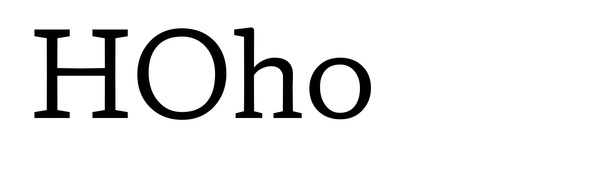
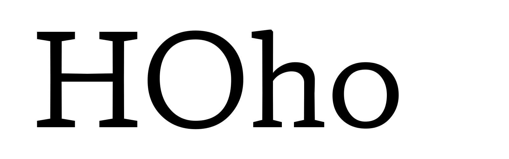
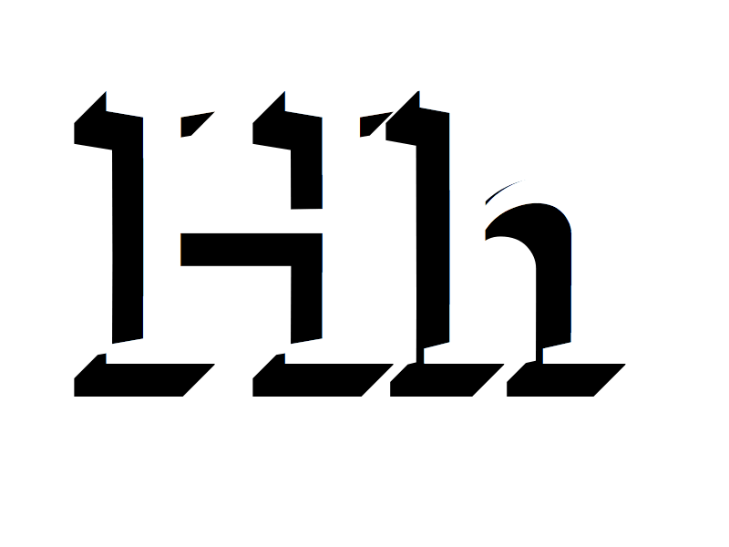
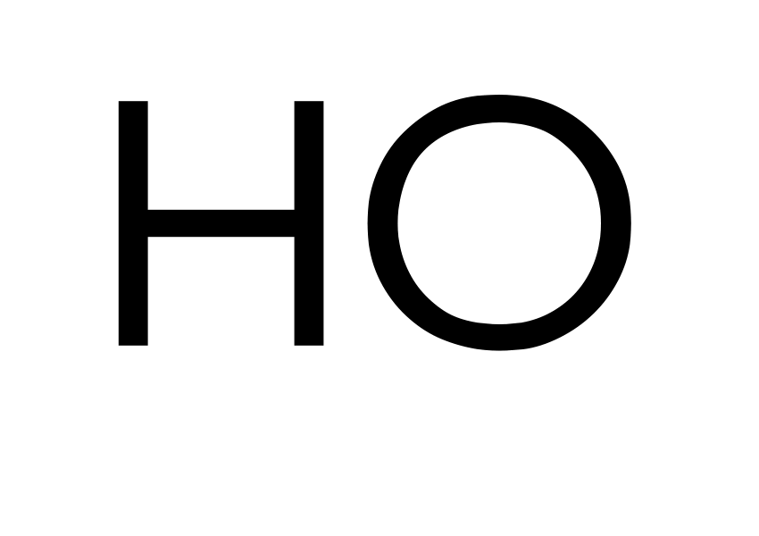
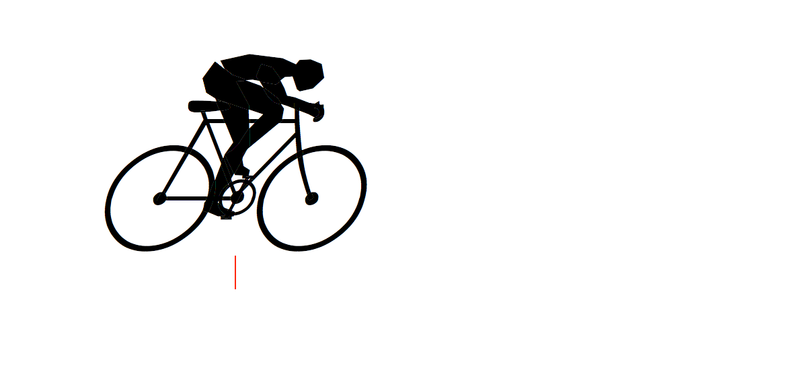
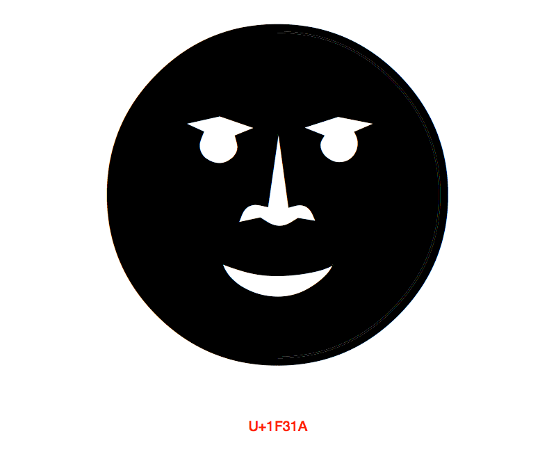

Opentype 1.8 Axis Addition Requests.
Summary
This axes list contains several different kinds of axes. Nearly every value found in an otf 1.0 to the present, referring to a typographic value in the font, is susceptible to the need for a registered axis to identify that which can be defined as a variation in a font (ytlc and xtab are examples of those). Variations add the possibilities of motion, space and time, and inter-script adjustment, and thus the need for axes to be added for interoperable programmability among variations fonts dealing with animation and parameters specific to non-latin scripts.
(This seems a lot to register compared to the registration rate so far, which would have left us enough axes to last around 440,000 years. But here are 25 axes, proposed, if the community so chooses to adopt them as standards.)
Overview
Our proposal contains several groups for axes registration including:
A. Existing Latin values (e.g. [y transparent uc] = OT cap height, ), and those Latin values surrounded by these newly registered axis, (e.g. [y opaque]). there are 11 of those.
B. Non-existing, often-shared-with-Latin y values, that require script-specific values for interoperable programmability of inter-script variations, (e.g. [y transparent Kanji]. There are seven of those.
C. Non-existing motion-based axes for interoperable programability of variations in motion.
D. Non-existing axes allowing the recoding of morph locations from one glyph to another.
Details
On each group
A. Universal values for weight [wght], width [wdth], and optical size [opsz], are already present in the specification, representing blends of lower level parameters that make weights, widths, and optical sizes, by standard definition and practice, in fonts of most scripts. Latin uppercase height, lowercase x-height, and several forms of descender and descender values also exist in the otf and so need to be recordable in variations. The proposed x opaque and x transparent axes are more variable OS/2 weight and width values, and y opaque is new. Via all of their registration, interoperability and programability.
B. This is a short list of script specific values for non-Latin designs that function best on different y proportions of the same em square in the productization phase of fonts, while still being able to share the em square in compromise or in favor of one script in the composition phase of typography via interoperable programatic access to these proposed axes.
C. These are fairly self-explanatory, if a use making animations is to solve the Distance = Rate x Time equation without trial-and-error on each glyph.
D. There is a need with animatable icons and glyphs, for the identity of unicodes that may vary along an axis to be definable. There is also great interest in supplying the glyphs of one instance from other instance locations in a variation space for glyphs of different features.
1. xtra
Tag: xtra
Name: x transparent
Description: assigns a "white" per mille value to each instance of the design space
Valid numeric range: -1000 to 2000
Scale interpretation: Values can be interpreted as per-mille-of-em
Recommended ‘normal’ value: Sample value 400
Suggested programmatic interactions: Applications may choose to select a variant in connection to an input, or it might be programmatically used
Suggested user interactions: Users may choose to program a variant in connection to direct or conjunctive input for a page discription language, or via a user interface
Related axis information: Users may choose to program a variant in connection to direct or conjunctive input for a page discription language, or via a user interface
Demo

2. xopq
Tag: xopq
Name: x opaque
Description: assigns a "black" per mille value to each instance of the design space
Valid numeric range: -1000 to 2000
Scale interpretation: Values can be interpreted as per-mille-of-em
Recommended ‘normal’ value: Sample value 88
Suggested programmatic interactions: Applications may choose to select a variant in connection to an input or it might be programmatically used
Suggested user interactions: Users may choose to program a variant in connection to direct or conjunctive input for a page discription language, or via a user interface
Related axis information: Users may choose to program a variant in connection to direct or conjunctive input for a page discription language, or via a user interface
Demo
3. ytra
Tag: ytra
Name: y transparent
Description: assigns an overall "white" per mille value to each instance
Valid numeric range: 0 to 2000
Scale interpretation: Values can be interpreted as per-mille-of-em
Recommended ‘normal’ value: Sample value 884
Suggested programmatic interactions: Applications may choose to select a variant in connection to an inpu, or it might be programmatically used
Suggested user interactions: Users may choose to program a variant in connection to direct or conjunctive input for a page discription language, or via a user interface
Related axis information: Users may choose to program a variant in connection to direct or conjunctive input for a page discription language, or via a user interface
Demo

4. yopq
Tag: yopq
Name: y opaque
Description: assigns a "black" per mille value to each instance of the design space
Valid numeric range: -1000 to 2000
Scale interpretation: Values can be interpreted as per-mille-of-em
Recommended ‘normal’ value: Sample value 116
Suggested programmatic interactions: Applications may choose to select a variant in connection to an input or it may be programmatically used.
Suggested user interactions: Users may choose to program a variant in connection to direct or conjunctive input for a page discription language, or via a user interface
Related axis information: Users may choose to program a variant in connection to direct or conjunctive input for a page discription language, or via a user interface
Demo
5. ytlc
Tag: ytlc
Name: y transparent lowercase
Description: assigns a "white" per mille value to each instance of the design space
Valid numeric range: 0 to 1000
Scale interpretation: Values can be interpreted as per-mille-of-em
Recommended ‘normal’ value: Sample value, 500
Suggested programmatic interactions: Applications may choose to select a variant in connection to an input, or it might be programmatically used.
Suggested user interactions: Users may choose to program a variant in connection to direct or conjunctive input for a page discription language, or via a user interface
Related axis information: Users may choose to program a variant in connection to direct or conjunctive input for a page discription language, or via a user interface
Demo

6. ytuc
Tag: ytuc
Name: y transparent uppercase
Description: a “white” per mille value for each Uppercase Height in the design space
Valid numeric range: -1000 to 1000
Scale interpretation: Values can be interpreted as per-mille-of-em
Recommended ‘normal’ value: Sample value 725
Suggested programmatic interactions: Applications may choose to select a variant in connection to an input or it might be programmatically used.
Suggested user interactions: Users may choose to program a variant in connection to direct or conjunctive input for a page discription language, or via a user interface
Related axis information: Users may choose to program a variant in connection to direct or conjunctive input for a page discription language, or via a user interface
Demo

7. ytde
Tag: ytde
Name: y transparent descender
Description: assigns a “white” per mille value to each instance of the design space
Valid numeric range: -1000 to 0
Scale interpretation: Values can be interpreted as per-mille-of-em
Recommended ‘normal’ value: Sample value -250
Suggested programmatic interactions: Applications may choose to select a variant in connection to input, or i the axis be programmatically used with input like line-spacing
Suggested user interactions: Users may choose to program a variant in connection to direct or conjunctive input for a page discription language, or via a user interface
Related axis information: Users may choose to program a variant in connection to direct or conjunctive input for a page discription language, or via a user interface
Demo

8. ytas
Tag: ytas
Name: y transparent ascender
Description: assigns a “white” per mille value to each instance of the design space
Valid numeric range: 0 to 1000
Scale interpretation: Values can be interpreted as per-mille-of-em
Recommended ‘normal’ value: Sample value 750
Suggested programmatic interactions: Applications may choose to select a variant in connection to an input, or it might be programmatically used
Suggested user interactions: Users may choose to program a variant in connection to direct or conjunctive input for a page discription language, or via a user interface
Related axis information: Users may choose to program a variant in connection to direct or conjunctive input for a page discription language, or via a user interface
Demo
9. xtab
Tag: xtab
Name: tabular width
Description: Axis contains a per mille value to each monspace or tabular instance
Valid numeric range: 1 to 4,000
Scale interpretation: Values can be interpreted as per-mille-of-em changes, between any instances in the design space
Recommended ‘normal’ value: Sample value 500
Suggested programmatic interactions: Applications except monospace setting, and such a width can vary along axis.
Suggested user interactions: Users may choose to program a variant in connection to direct or conjunctive input for a page discription language, or via a user interface.
Related axis information: Users may choose to program a variant in connection to direct or conjunctive input for a page discription language, or via a user interface.
Demo

10. udln
Tag: udln
Name: Underline
Description: values for weight of an underline
Valid numeric range: 1 to 1000
Scale interpretation: Values can be interpreted as per-mille-of-em
Recommended ‘normal’ value: Sample value for a Sans regular Latin would be 120
Suggested programmatic interactions: Applications may use the underline axis, or it may inform instance-making software of underline value and location.
Suggested user interactions: Users may choose to program a variant in connection to direct or conjunctive input for a page discription language, or via a user interface.
Related axis information: Users may choose to program a variant in connection to direct or conjunctive input for a page discription language, or via a user interface.
Demo

11. shdw
Tag: shdw
Name: Shadow depth
Description: values for the depth of a shadow
Valid numeric range: 1 to 1000
Scale interpretation: Values can be interpreted as per-mille-of-em
Recommended ‘normal’ value: Sample value for Sans 60 point shadow would be 30
Suggested programmatic interactions: Applications allow the user to select the drop shadow treatment for text, raising need for a value for every instance in a design space that effects a shadow
Suggested user interactions: Users may choose to program a variant in connection to direct or conjunctive input for a page description language, or via a user interface
Related axis information: Users may choose to program a variant in connection to direct or conjunctive input for a page description language, or via a user interface
Demo
12. refl
Tag: refl
Name: Reflect
Description: value for a y reflection
Valid numeric range: -1 to -1000
Scale interpretation: Values can be interpreted as per-mille-of-em
Recommended ‘normal’ value: sample value for a reflection would be -350
Suggested programmatic interactions: Applications may allow the user to select the reflection of text.
Suggested user interactions: Users may choose to program a variant in connection to direct or conjunctive input for a page discription language, or via a user interface
Related axis information: Users may choose to program a variant in connection to direct or conjunctive input for a page discription language, or via a user interface
Demo

13. otln
Tag: otln
Name: Outline value
Description: values for the weight of an outlined font
Valid numeric range: 1 to 1000
Scale interpretation: Values can be interpreted as per-mille-of-em
Recommended ‘normal’ value: default is 0
Suggested programmatic interactions: Applications may allow the user to select the embossing of text and a depth if the axis exists.
Suggested user interactions: Users may choose to program a variant in connection to direct or conjunctive input for a page description language, or via a user interface
Related axis information: Users may choose to program a variant in connection to direct or conjunctive input for a page description language, or via a user interface
Demo
14. engr
Tag: engr
Name: Engraving value
Description: values for the width of the engrave
Valid numeric range: 1 to 1000
Scale interpretation: Values can be interpreted as per-mille-of-em
Recommended ‘normal’ value: Sample value for a Sans regular Latin engraving would be 33
Suggested programmatic interactions: Applications may allow the user to select the embossing of text, and a depth if the axis exists
Suggested user interactions: Users may choose to program a variant in connection to direct or conjunctive input for a page description language, or be given the option via a user interface
Related axis information: Users may choose to program a variant in connection to direct or conjunctive input for a page description language, or be given the option via a user interface
Demo

15. embo
Tag: embo
Name: emboss depth
Description: values for embossment depth
Valid numeric range: 1 to 1000
Scale interpretation: Values can be interpreted as per-mille-of-em
Recommended ‘normal’ value: Sample value for Sans 60 point emboss would be 24
Suggested programmatic interactions: Applications may allow the user to select the embossing of text, and a depth if the axis exists.
Suggested user interactions: Users may choose to program a variant in connection to direct or conjunctive input for a page description language, or be given the option via a user interface
Related axis information: Users may choose to program a variant in connection to direct or conjunctive input for a page description language, or be given the option via a user interface
Demo

16. ytch
Tag: ytch
Name: y transparent Chinese
Description: values represent the height of Chinese glyphs
Valid numeric range: 1 to 2400
Scale interpretation: Values can be interpreted as per-mille-of-em changes, between any instances in the axis
Recommended ‘normal’ value: Sample value 950
Suggested programmatic interactions: Applications may choose to select a variant in connection to an input for more or less ytch, or it might be programmatically used
Suggested user interactions: User may chose a variant to modify the width of the type
Related axis information: User may chose a variant to modify the width of the type
Demo

17. xtch
Tag: xtch
Name: x transparent Chinese
Description: values represent the width of Chinese glyphs
Valid numeric range: 1 to 8000
Scale interpretation: Values can be interpreted as per-mille-of-em changes, between any instances in the axis
Recommended ‘normal’ value: Sample value 950
Suggested programmatic interactions: Applications may choose to select a variant in connection to an input for more or less xtch, or it might be programmatically used
Suggested user interactions: User may chose a variant to modify the height of the type
Related axis information: User may chose a variant to modify the height of the type
Demo
18. rxad
Tag: rxad
Name: relative x advance
Description: assigns a distance value per mille to the motion of a glyph
Valid numeric range: -1000 to 1000
Scale interpretation: Values can be interpreted as per-mille-of-em
Recommended ‘normal’ value: none
Suggested programmatic interactions: Applications may enable plotting the number of loops of an animation required for the time and distance defined by the user.
Suggested user interactions: Users may choose different speeds and distances traveled by an animation
Related axis information: Users may choose different speeds and distances traveled by an animation
Demo
19. ryad
Tag: ryad
Name: relative y advance
Description: assigns a distance value per mille to the motion of a glyph
Valid numeric range: -1000 to 1000
Scale interpretation: Values can be interpreted as per-mille-of-em
Recommended ‘normal’ value: none
Suggested programmatic interactions: Applications may enable plotting the number of loops of an animation required for the time and distance defined by the user
Suggested user interactions: Users may choose different speeds and distances traveled by an animation
Related axis information: Users may choose different speeds and distances traveled by an animation
Demo

20. rsec
Tag: rsec
Name: relative second
Description: axis contains a reletive second value for one, or each glyph on that axis
Valid numeric range: 001- 60.00
Scale interpretation: Value can be interpreted as a recommendation for one second of animation time
Recommended ‘normal’ value: 1
Suggested programmatic interactions: Applications may plot the relative time of a glyph, or a glyph to other glyphs, and play them in relative or absolute time
Suggested user interactions: Users may choose realistic, or other speeds for an animation
Related axis information: Users may choose realistic, or other speeds for an animation
Demo

21. vrot
Tag: vrot
Name: glyph rotation axis
Description: assigns a value to each instance of the axis
Valid numeric range: -360.00 to 360.00
Scale interpretation: Values can be interpreted as degrees of rotation from the default, which is zero
Recommended ‘normal’ value: Default fonts shold be set at 0 degrees
Suggested programmatic interactions: Applications may choose to select a variant in connection to an input for ccw or cw vrot, or it might be programmatically used.
Suggested user interactions: Users may choose to program a variant for direct input, or via a user interface connection.
Related axis information: Users may choose to program a variant for direct input, or via a user interface connection.
Demo

22. vuid
Tag: vuid
Name: Unicode variation axis
Description: instances represent changes to the glyph’s Unicode Id
Valid numeric range: Any Unicode value can be used
Scale interpretation: Values can be interpreted as glyph locations
Recommended ‘normal’ value: Any common Unicode value
Suggested programmatic interactions: Applications may choose to present a variation in connection to an input Unicode id
Suggested user interactions: Users may choose to input a character to a page discription language, and the unicode presented is a variant in connection to other input
Related axis information: Users may choose to input a character to a page discription language, and the unicode presented is a variant in connection to other input
Demo
23. votf
Tag: votf
Name: feature variation axis
Description: instances represent changes to a glyph’s feature
Valid numeric range: Any feature tag can be used.
Scale interpretation: Values can be interpreted as feature locations
Recommended ‘normal’ value: Any common feature
Suggested programmatic interactions: Applications may choose to select a variation in connection to an input feature tag id.
Suggested user interactions: Users may choose to program a feature in connection to input for a page discription language.
Related axis information: Users may choose to program a feature in connection to input for a page discription language.
Demo